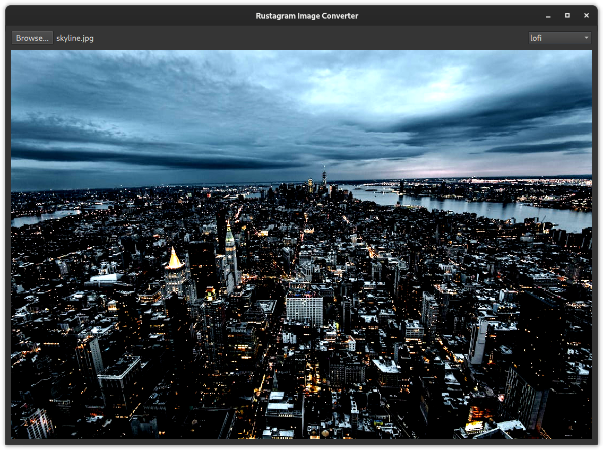

Adding behavior in Rust
At the moment our ImagePainter doesn't do anything, not even paint an image.
So let's add some behavior. We want our ImagePainter to load a file from a given path, display a status for errors, etc.
✅ First, add the necessary fields to the ImagePainterRust struct
- ✅ The image path to load from
- ✅ Current status
- ✅ The converted image
- ✅ A boolean to indicate whether the conversion is currently running
- ✅ The filter to use for conversion
✅ Then make sure to initialize the values to sensible definitions by adding a custom implementation of the Default trait.
✅ And don't forget to import the new types with use.
Example definition
use cxx_qt_lib::{QColor, QImage, QString, QUrl};
pub struct ImagePainterRust {
filter: QString,
status: QString,
running: bool,
file_url: QUrl,
image: Option<QImage>,
}
impl Default for ImagePainterRust {
fn default() -> Self {
Self {
filter: QString::from("1977"),
status: QString::from("No file selected"),
image: None,
file_url: QUrl::default(),
running: false,
}
}
}Now that we've added members to the Rust side, let's expose them as Q_PROPERTYs.
To do so, add #[qproperty([TYPE], [FIELD_NAME])] attributes to the #[qobject] type declaration for every property.
Note that the image itself won't be a property as QML unfortunately can't easily render QImage instances.
We'll use the QPainter for this.
✅ Add properties for status, filter, running and file_url.
✅ Add the imports for the necessary types (QString, QUrl) to the #[cxx_qt::bridge].
Example definition
#[cxx_qt::bridge(cxx_file_stem = "image_painter")]
pub mod qobject {
unsafe extern "C++" {
include!("cxx-qt-lib/qcolor.h");
type QColor = cxx_qt_lib::QColor;
include!("cxx-qt-lib/qurl.h");
type QUrl = cxx_qt_lib::QUrl;
include!("cxx-qt-lib/qstring.h");
type QString = cxx_qt_lib::QString;
include!(<QtQuick/QQuickPaintedItem>);
}
// ...
unsafe extern "RustQt" {
#[qml_element]
#[base = "QQuickPaintedItem"]
#[qobject]
#[qproperty(QString, status)]
#[qproperty(QString, filter)]
#[qproperty(QUrl, file_url)]
#[qproperty(bool, running)]
type ImagePainter = super::ImagePainterRust;
// ...
}
// ...
}✅ Check the new properties work by hooking them up to QML.
They don't do anything yet, but you also shouldn't get any errors from QML.
✅ Create a new function on our ImagePainter that will later get called whenever we need to update the image:
impl qobject::ImagePainter {
fn load_file(mut self: Pin<&mut Self>) {
println!("Hello world from CXX-Qt");
}
}✅ Hook up the function so it is called whenever the filter or the file path change
impl cxx_qt::Initialize for qobject::ImagePainter {
fn initialize(mut self: Pin<&mut Self>) {
self.as_mut().set_fill_color(&QColor::from_rgb(0, 119, 200));
self.as_mut().on_filter_changed(Self::load_file).release();
self.as_mut().on_file_url_changed(Self::load_file).release();
}
}Try finding explanations for these answers in the CXX-Qt book.
❓ Why is the
release()call necessary after connecting to a signal?
❓ How can you change the connection type when connecting to a signal from Rust?
✅ Check that you can successfully print "Hello world from CXX-Qt!" by selecting a file path or changing the image filter
Before we implement the image loading and filtering, we'll need some additional types:
- QByteArray (and the QByteArrayCursor helper)
- QSizeF and QRectF to calculate the size for painting
✅ Import these types from cxx-qt-lib
✅ Add QSizeF and QRectF to the #[cxx_qt::bridge]
We'll also need a few more functions from C++ to paint the image, get the size of the ImagePainter, etc.
✅ Add declarations for the following functions to the #[cxx_qt::bridge]
✅ Tell CXX-Qt to enable threading support by means of the cxx_qt::Threading trait
Example declarations
#[cxx_qt::bridge(cxx_file_stem = "image_painter")]
mod qobject {
// ...
unsafe extern "C++" {
include!(<QtGui/QPainter>);
type QPainter;
#[rust_name = "draw_image"]
fn drawImage(self: Pin<&mut QPainter>, rectangle: &QRectF, image: &QImage);
}
unsafe extern "RustQt" {
// ...
#[inherit]
fn size(self: &ImagePainter) -> QSizeF;
#[inherit]
fn update(self: Pin<&mut ImagePainter>);
}
impl cxx_qt::Threading for ImagePainter {}
// ...
}✅ Add code to load the selected image from disk and display it in the update function
Documentation that may be useful:
- CXX-Qt-lib for using Qt types from Rust
- rustagram2
- Click on the Re-export of the
imagecrate to learn more about how to use the resulting image.
- Click on the Re-export of the
- Rust standard library documentation
✅ Add threading in Rust via std::thread::spawn to load and convert the image in the background
- Check out the CXX-Qt book to learn more about Threading
✅ Add a BusyIndicator to QML to show that the background thread is wthat the background thread is waiting.
The resulting application should look like this:

✅ Check out the full example code and compare it with your implementation